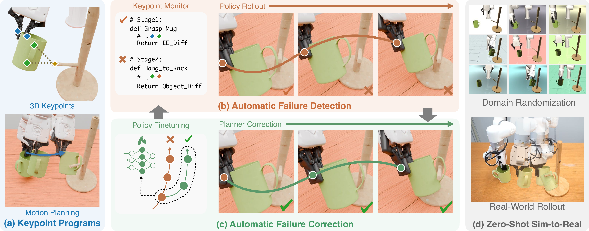
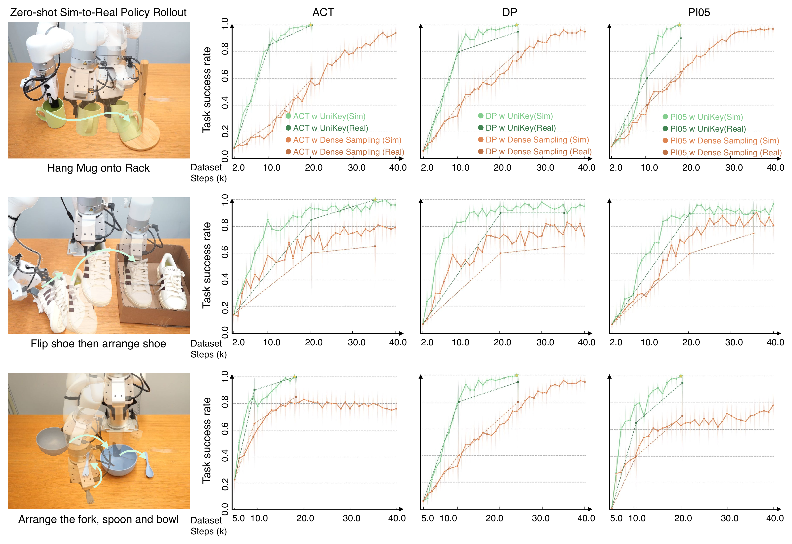

UniKey: Keypoints as a Unified Interface for Scalable Data Generation and Policy Learning
1 Columbia University
2 Toyota Research Institute
Introducing UniKey
Imitation learning policies can fail when small execution errors move the robot into states its demonstrations do not cover. Improving robustness often requires people to identify these failures and collect corrective demonstrations, a process that is costly to repeat across tasks.
We introduce UniKey, a framework that uses keypoints as a unified interface for scalable data generation and policy learning. The same keypoint programs generate expert demonstrations, monitor policy execution, and plan corrections from policy failure states.
UniKey brings these capabilities together:
- Expert Data Generation: generate expert trajectories from keypoint programs designed by agents across different object initializations.
- Automated Detection and Correction of Failure: automatically detect policy failures and collect corrective demonstrations for policy finetuning.
- Sim-to-Real: finetune on domain-randomized data and deploy the policy directly in the real world.
Expert Data Generation
UniKey uses vision-language model (VLM) agents to read the task description and robot and object geometry, then design keypoints and keypoint trajectories. By executing the resulting keypoint programs across different object initializations, UniKey generates expert demonstrations at scale.
Select a task to see its keypoint program and the resulting demonstrations across different object initializations.
Automated Detection and Correction of Failure
Imitation learning still suffers from compounding errors during execution. To improve policy robustness, UniKey uses the same keypoint program to monitor policy execution and automatically generate corrective demonstrations from detected failure states.
In each round, UniKey runs batched policy rollouts, generates corrective data in batches, and finetunes the policy on the aggregated dataset. As the round number increases, the success rate of policy rollout increases and corrective data is collected at progressively later time steps of policy rollout.
Sim-to-Real
UniKey trains policies entirely in simulation and transfers them directly to the real robot. After iterative corrective data generation, the policy is finetuned on a domain-randomized dataset to prepare it for real-world deployment.
Domain Randomization
UniKey applies domain randomization of lighting, object textures, background, and cameras to the collected dataset and finetunes the policy on the augmented dataset. The finetuned policy is then deployed in the real world zero-shot.
Real-World Execution
Our sim-to-real policy achieves a 100% success rate for 30 minutes on the following tasks, without real-world demonstrations or real-world policy finetuning. We overlay the real-world and simulated initial scenes, as shown on the MacBook screen, to ensure that both rollouts start from the same scene configuration.
Hang Mug
Arrange Table
Flip and Arrange Shoe
Pack Battery
Technical Details
Policy Failure Detection and Correction
UniKey represents each task as a sequence of geometric constraints over keypoints. The planner uses these constraints to generate motion, and the monitor reuses them to evaluate policy progress in simulation.
- Find the failed stage. Evaluate the keypoint constraints in order to identify the stage the policy did not complete.
- Locate the divergent step. Compare three end-effector keypoints along the policy trajectory with a planner-generated reference. The first step whose deviation exceeds a predefined threshold identifies the correction state.
- Generate the correction. Restore the simulator to that state and run the remaining keypoint program for a fixed corrective horizon. Add the corrective data to the accumulated dataset and finetune the policy.

Data Efficiency and Robustness
Corrective demonstrations target states where the current policy fails. UniKey and dense sampling start from the same initial dataset and policy checkpoint, then add an equal number of expert action steps in each round. Both policies are finetuned on their accumulated datasets.
UniKey achieves 2.65× higher data efficiency, measured by the average dense-to-UniKey ratio of dataset steps needed to first reach 70%, 80%, and 90% success across the evaluated sim-to-real tasks and policy architectures.
Sim-to-Real Results
We compare UniKey (which collects only corrective data) versus Dense Sampling (which collects complete episodes). UniKey achieves a higher final success rate and better sample efficiency in both simulation and the real world. The corrective data both expands the dataset's observation space and is more informative than data collected through usual dense sampling.

Robotwin Benchmark
We also evaluate UniKey against dense sampling on 10 RoboTwin 2.0 tasks. UniKey outperforms dense sampling across all 10 tasks.